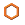
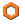

|
|
Molecular Representation Panel |
This panel can be used to change the representation of atoms and bonds.
To open the Molecular Representation panel, you can:
Choose Style → Atom and Bond Representation in the main window.
This panel is dockable, so it opens by default in the Workspace. You can change this behavior in the Preferences panel, under General – Panels.
You can use this panel to change the representation of atoms and bonds. The buttons at the top of the panel apply the representation to all atoms, and are equivalent to double-clicking the buttons on the Representation toolbar. The remaining controls allow you to set atom and bond representations, and apply them to selected atoms. The options for atom representations and bond representations are not independent, but most of them set both the atom and bond reprsentation. They are partitioned according to the main characteristig being set (atom or bond).
This panel does not set the default representation for atoms that do not have a representation. The defaults are set in the Preferences panel.
Set the representation for all atoms to the type shown on the buttons.
| Wire |
|
|  | Thin Tube |
|  | Tube |
 |
Ball & Stick |
 |
CPK |
Choose an option for the representation of atoms, to be applied to the atom selection made in the Apply current representation to atoms section. The following representation options are available:
Use the standard picking controls to select the atoms to be displayed with the current atom representation.
Choose an option for the representation of bonds, to be applied to the atom selection made in the Apply current representation to bonds section. The following representation options are available:
Use the standard picking controls to select the atoms to be displayed with the current bond representation.
Open the Preferences panel to the Atoms and bonds settings group, where you can make default settings for display of atoms and bonds.
|